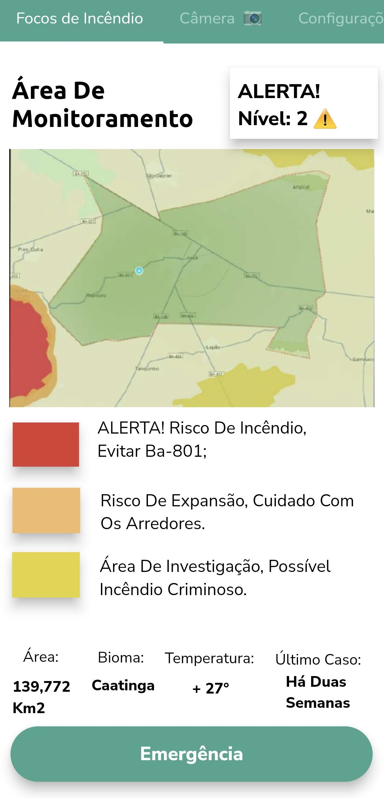
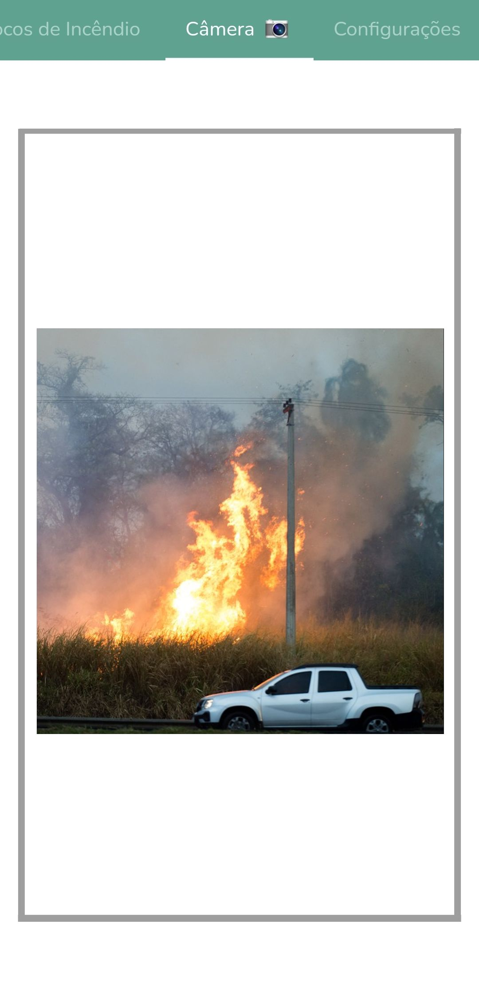
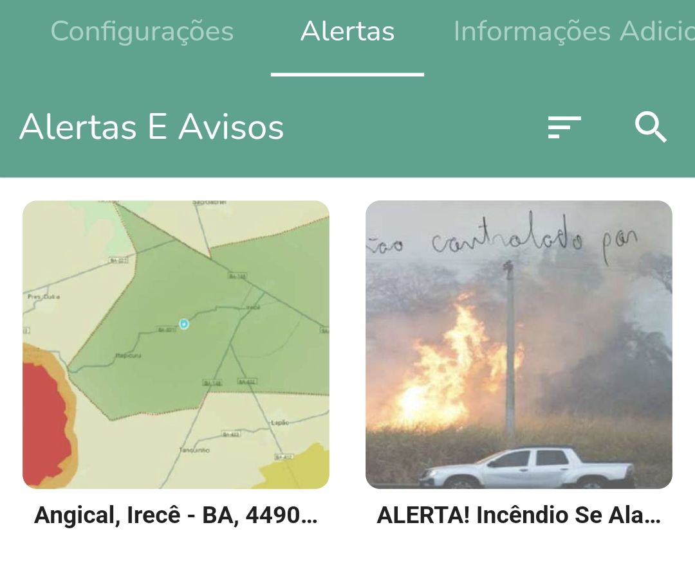
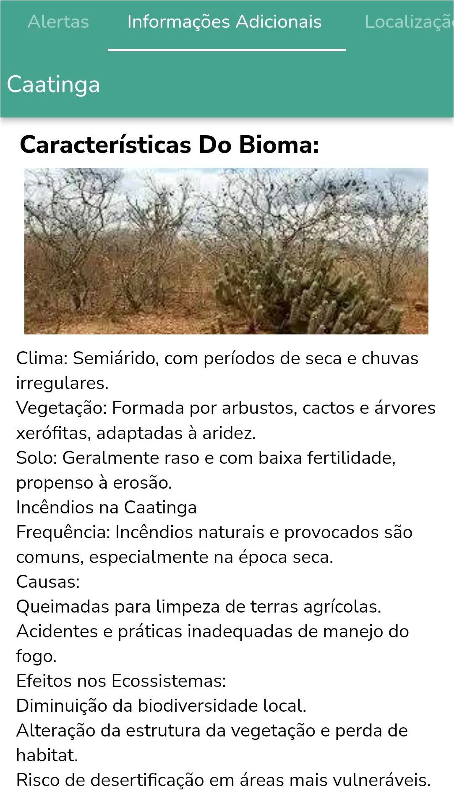

Monitoramento de Incêndios Florestais
Trabalhando juntamente com câmeras equipadas de sensores feitas para identificar focos de incendio, temos um aplicativo que seria disponibilizado para todos que alertaria os cidadãos e as autoridades dos focos de calor, evitando que se espalhe e forme um incêndio de larga escala.
Nesse app, assim que aberto os cidadãos terão acesso a um mapa perto dele que mostrará a situação de queimadas a seu redor, junto aos níveis de perigo de cada área.
Quando o sistema identifica um foco de incêndio, as coordenadas exatas são enviadas automaticamente para as autoridades competentes, como o Corpo de Bombeiros e a Defesa Civil. O alerta inclui um mapeamento detalhado do local, facilitando uma resposta rápida e eficiente. Os níveis de alerta são:
- Amarelo: Área em possível risco de incêndio criminoso (Nível 1)
- Laranja: Risco de expansão de queimada (Nível 2)
- Vermelho: Área sofrendo queimadas (Nível 3)
Além disso, em caso de incêndio, há um botão de emergência para ligar diretamente para as autoridades locais.
No menu ao lado temos, as opções de câmera, disponível somente para as autoridades, nela, é possível ver as imagens em tempo real de seu setor, controlar o ângulo de visão, ampliar e acessar histórico das filmagens.
O sistema permite aos usuários definir e monitorar áreas específicas de interesse dentro do mapa. Isso é principalmente útil para propriedades privadas, reservas florestais ou áreas agrícolas, garantindo que qualquer atividade suspeita seja detectada imediatamente.
Na sessão de alertas, temos imagens do que está acontecendo ao seu redor, uma visão geral e ao tocar no alerta ele te mostrará a localização com precisão.
Quando vamos ao menu configurações temos o diagnóstico dos dispositivos, que mostra se há defeitos, a situação das conexões, sensores, motores, etc.
Arrastando novamente para o lado, temos a aba de informações adicionais. Lá encontraremos as características do bioma em que você está, como o clima, solo, frequência de incendios e suas causas.
O protótipo deste app pode ser baixado clicando aqui, disponível somente para dispositivos Android.
Conclusão
O uso de tecnologias avançadas para o mapeamento geográfico e monitoramento de incêndios florestais representa um grande avanço na preservação ambiental. Com a combinação de câmeras térmicas, termográficas e híbridas, juntamente com um sistema de alerta eficiente e personalizável, torna-se possível detectar e responder de forma rápida a focos de incêndio, minimizando danos e protegendo áreas vulneráveis. A capacidade de monitorar e prever riscos, bem como identificar causas de incêndios criminosos, proporciona um controle mais rigoroso e uma ação mais eficaz das autoridades competentes. Dessa forma, esta ferramenta se mostra indispensável na luta contra os incêndios florestais, promovendo uma gestão ambiental mais inteligente e proativa.